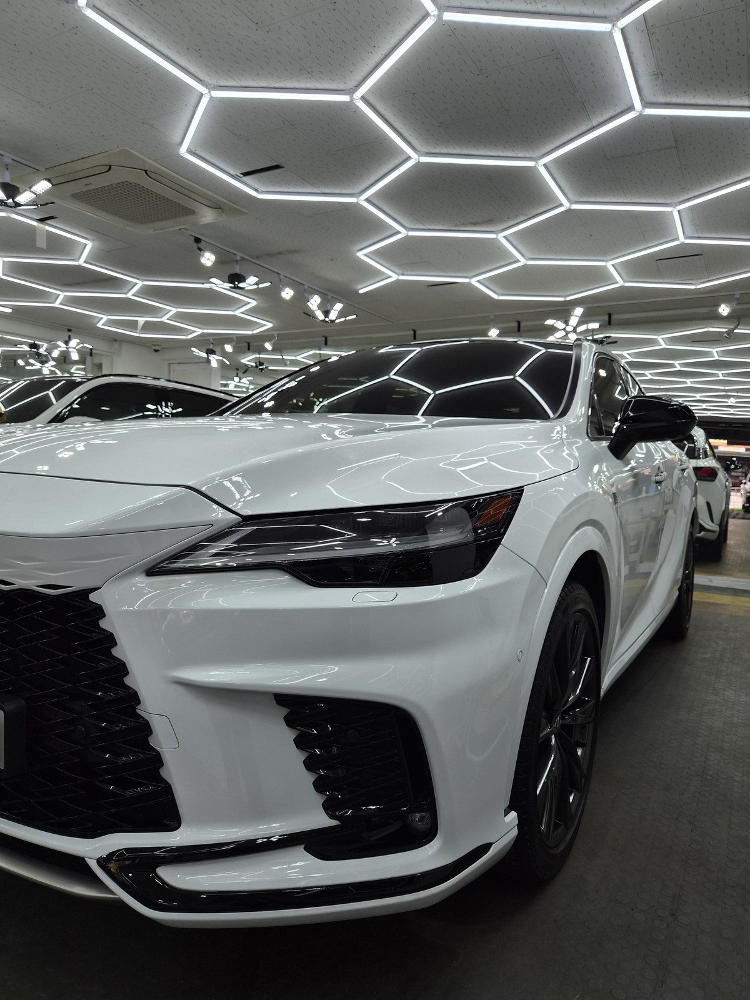
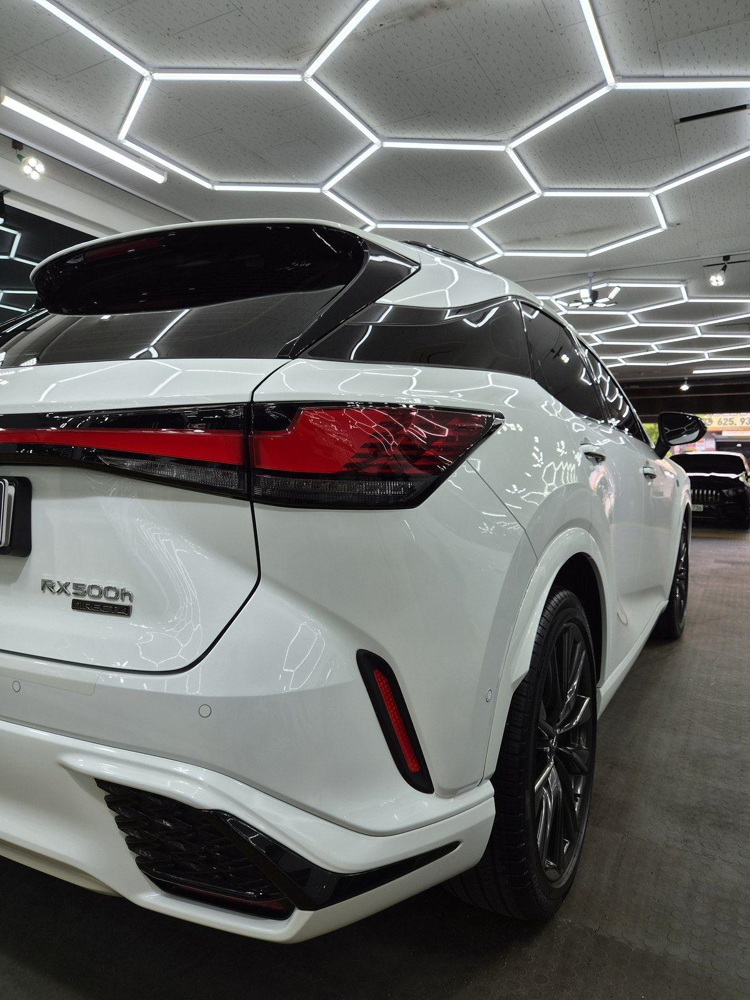
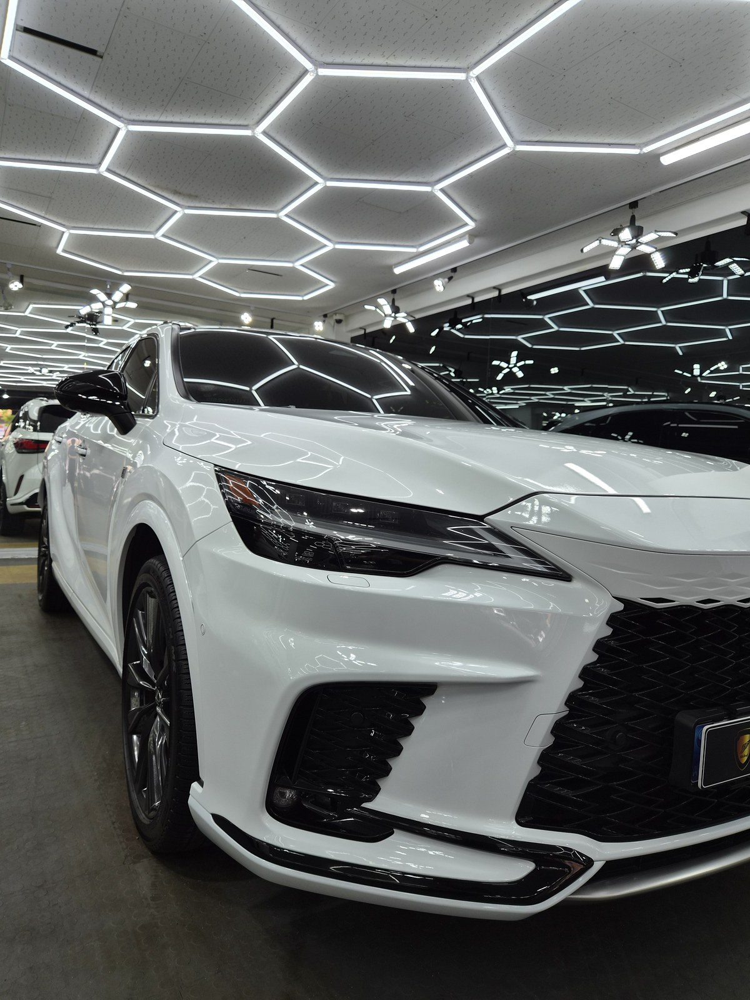
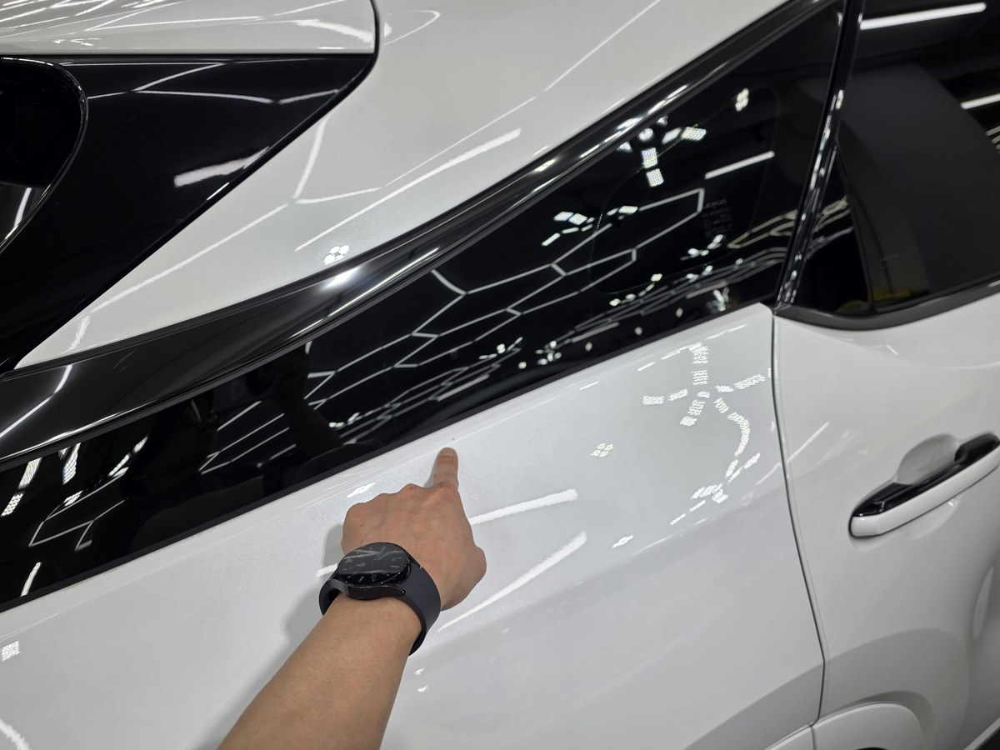
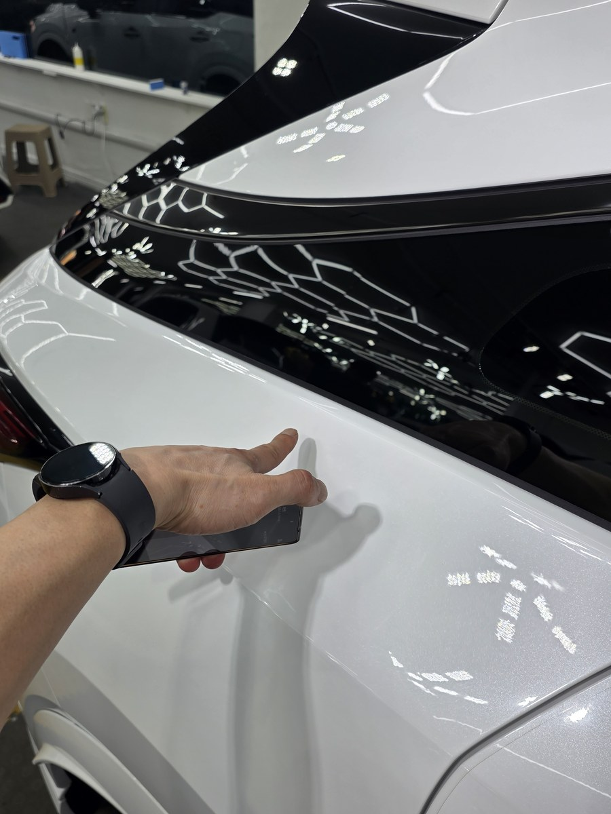
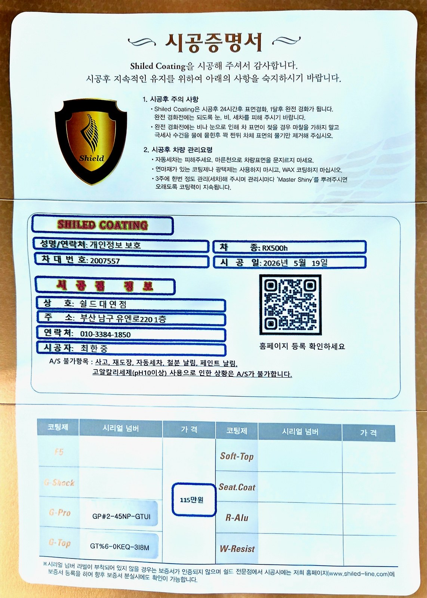
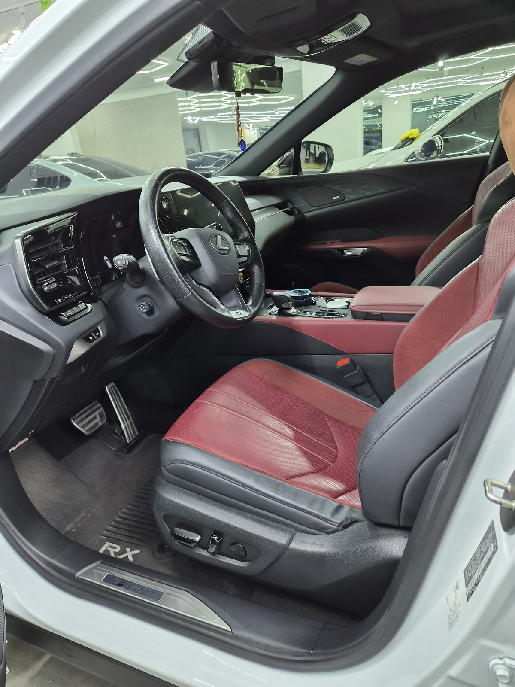

부산 쉴드광택에 들어온 렉서스 RX500h입니다. 화이트 바디입니다.
이 차는 광택으로 표면을 정리한 뒤, G-PRO·G-TOP 듀얼코팅으로 마감했습니다.

흰색차도 광택이 필요한가
필요합니다. 흰색은 잔기스가 눈에 덜 띌 뿐, 없는 게 아닙니다.
조명을 비추면 흰색에도 거미줄 잔기스가 그대로 드러납니다. 검정처럼 한눈에 보이지 않을 뿐입니다.
광택으로 표면을 평탄하게 정리하면, 흰색 특유의 맑고 깨끗한 느낌이 살아납니다.
흰색은 잔기스보다 오염이 문제입니다
흰색차의 진짜 고민은 잔기스보다 오염입니다.
빗물 자국(워터스팟), 철분에 의한 누런 점, 가장자리 때가 대표적입니다. 그래서 흰색은 발수·방오를 더 신경 써야 합니다.
기술자의 팁
흰색은 가장자리(범퍼 틈, 주유구 둘레)에 때가 잘 낍니다. 발수·방오가 강한 코팅을 올리면 이 부위에 오염이 덜 들러붙어 관리가 한결 쉬워집니다.
코팅 전, 전처리가 9할입니다
좋은 코팅도 더러운 바탕 위에 올리면 의미가 없습니다.
디테일링 세차로 표면 오염을 걷어내고, 철분 제거제로 박힌 쇳가루를 녹여냅니다. 마스킹으로 고무·플라스틱을 보호하고, 탈지까지 끝내야 비로소 코팅을 올릴 면이 됩니다. 눈에 안 보이는 오염까지 잡는 게 퀄리티의 시작입니다.
왜 싱글이 아니라 듀얼인가
듀얼코팅은 G-PRO와 G-TOP을 겹쳐 올리는 방식입니다.
G-PRO는 저희 제품 중 경도가 가장 높은 하드코팅입니다. 스크래치 내성을 담당합니다. G-TOP은 발수·방오 성능이 강합니다. 빗물과 오염을 밀어내는 쪽입니다.
흰색은 오염·물자국 관리가 중요한 색입니다. 그래서 단단함과 발수·방오를 동시에 가져가는 듀얼로 잡았습니다. 코팅제는 대표가 화학공학 전공으로 직접 개발·제조한 제품입니다.
마감 후
패널 위로 헥사 조명이 또렷하게 맺힙니다.
왜곡 없이 떨어지는 반사가, 광택으로 표면을 평탄하게 잡고 코팅막이 고르게 올라갔다는 증거입니다. 흰색 위에 단단한 보호막을 한 겹 입힌 상태입니다.


광택 전후, 같은 자리가 어떻게 달라지나
말로 "표면을 정리했습니다"라고 하는 것보다, 같은 자리를 전후로 비교하는 게 정확합니다.
아래 사진은 작업 전과 작업 후에 같은 위치를 같은 조명 아래에서 찍은 것입니다.


쿼터패널 — 흐릿하던 반사가 헥사 조명 모양 그대로 맺힙니다

모든 시공 차량에 시공증명서를 함께 드립니다

시공 후, 이렇게 관리하세요
코팅은 시공으로 끝이 아닙니다. 관리로 수명이 갈립니다.
완전 경화 전(약 하루)에는 비·눈·세차를 피해 주십시오. 자동세차(기계세차)는 브러시가 잔기스를 만드니 피하시는 게 좋습니다. 3주에 한 번 관리 세차 때 전용 관리제 '마스터샤이니'를 뿌려주시면 코팅력이 오래 유지됩니다.
자주 묻는 질문
Q. 흰색차도 광택이 필요한가요?
A. 필요합니다. 흰색은 잔기스가 눈에 덜 띌 뿐, 표면에 스월이 없는 게 아닙니다. 조명을 비추면 흰색에도 잔기스가 드러납니다. 광택으로 정리하면 맑고 깨끗한 느낌이 살아납니다.
Q. 듀얼코팅(G-PRO+G-TOP)은 어떤 조합인가요?
A. G-PRO는 경도가 높아 스크래치 내성을, G-TOP은 발수·방오를 담당합니다. 둘을 겹쳐 단단함과 발수·방오를 동시에 가져갑니다. 오염·물자국 관리가 중요한 흰색에 잘 맞습니다.
Q. 흰색차는 어떤 오염이 잘 생기나요?
A. 빗물 자국(워터스팟), 철분에 의한 누런 점, 가장자리 때가 대표적입니다. 발수·방오가 강한 G-TOP을 올리면 빗물과 오염이 덜 들러붙어 관리가 쉬워집니다.
Q. 코팅 후 관리는 어떻게 하나요?
A. 완전 경화 전 약 하루는 비·눈·세차를 피해 주십시오. 자동세차는 잔기스를 만드니 피하시고, 3주에 한 번 마스터샤이니로 관리하시면 코팅력이 오래 유지됩니다.
Q. 쉴드광택 위치와 예약은 어떻게 하나요?
A. 부산 남구 유엔로220 1F 쉴드광택입니다. 예약·상담은 010-3384-1850, 대표 최한중이 직접 상담하고 책임 시공합니다.
흰색은 깨끗해 보여도, 빛을 비추면 다릅니다.
제품을 직접 만드는 사람이 직접 시공합니다.
부산에서 광택·유리막코팅을 고민 중이시면 편하게 연락 주십시오.
어떤 차를 타냐보다 어떻게 타냐가 중요합니다~!
📞 010-3384-1850 견적 문의쉴드광택 · 부산 남구 유엔로220 1F · 대표 최한중